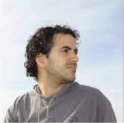
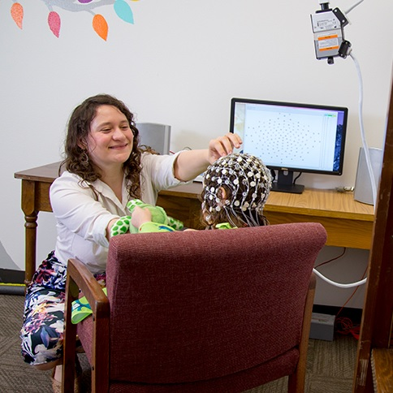
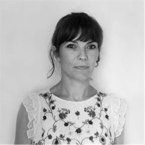
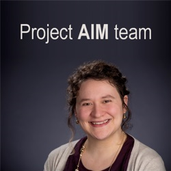

Dr. Corentin J. Gosling is an associate professor of neuropsychology at Paris Nanterre University.
His research interests focus on the diagnosis and clinical interventions for individuals with neurodevelopmental disorders.
He is the principal investigator of this project.
Ms. Ariane Cartigny is a clinical neuropsychologist. She currently works at the Excellence Centre for Autism and Neurodevelopmental Disorders at Robert Debre Hospital.
Since 2020, she co-leads the team of neuropsychologists of the FondaMental network in France.

Dr. Aleix Solanes Font earned his PhD in Computer engineering in 2021 at the University of Barcelona.
He has a lot of experience in applying machine learning, deep learning and statistical techniques to neuroimaging and clinical data. He is the programmer of several softwares related to neuroimaging topics.

Dr. Micheal Sandbank is an internationally-recognized expert on early interventions for young children on the autism spectrum.
She is the lead researcher on Project AIM, a scoping systematic review and meta-analysis of all group design studies of interventions for young children on the autism spectrum.

Dr. Paolo Fusar-Poli is a Professor of Preventive Psychiatry at King's College London where he heads the EPIC Lab.
He ranked as the number two expert in psychosis in the world in 2019 according to expertscape and he was an external advisory member for the DSM-5 and DSM-5TR Psychosis Working Group, US.

Dr. Marco Solmi is Associate Professor of Psychiatry at University of Ottawa, Canada, visiting senior academic at University of Southampton, and visiting researcher at King's College, London, UK.
His clinical focus is on prevention/early intervention for mental disorders, physical health in mental disorders, and psychopharmacology.
Dr. Samuele Cortese is currently Professor of Child and Adolescent Psychiatry at the University of Southampton and Honorary Consultant Child and Adolescent Psychiatry for Solent NHS Trust.
He ranks #1 worldwide in terms of expertise on ADHD and #2 in child psychiatry according to Expertscape.
Dr. Joaquim Radua is a psychiatrist medical doctor and statistician interested in improving the treatment of psychiatric disorders.
He is the developer of numerous methods for meta-analysis of neuroimaging studies and he has been named as one of the most cited researchers in Psychiatry and Psychology.

Dr. Richard Delorme is the Head of the Center of Excellence for Autism and Neurodevelopmental Disorders at Robert Debré Hospital in Paris, France.
He has participated in the identification of the first genes involved in autism.
He is the senior author of this project.
Graduate students working on this project

Laure Boisseleau is a master's student in neuropsychology at Paris Nanterre university.
Her research interests lie in the efficacy of complementary and alternative medicine, in particular when applied to people with a neurodevelopmental disorder.
Undergraduate students providing assistance on this project
Significant contributors to this database

The project AIM team:
Micheal P Sandbank Kristen Bottema-Beutel Shannon Crowley Margaret Cassidy Kacie Dunham Jacob I Feldman Jenna Crank Susanne A Albarran Sweeya Raj Prachy Mahbub Tiffany G Woynaroski